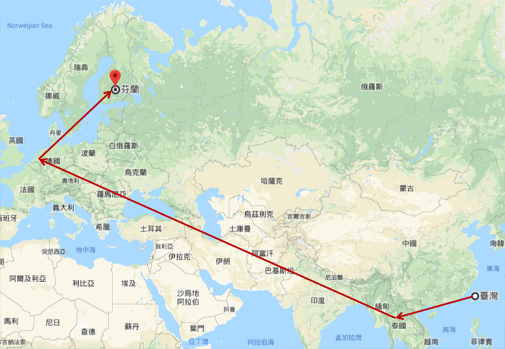
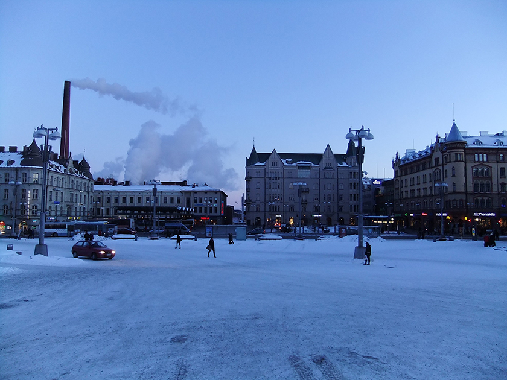

無預警地來到芬蘭，卻也意外地發現另一個國度的美！幾年前的一通電話，讓我提早結束當時的工廠出差，轉往一個遙遠國度—芬蘭！
芬蘭共和國（芬蘭語：Suomi，瑞典語／英語：Finland) 。芬蘭面積約 338,145 平方公里，地跨北緯 60 度至 70 度之間，位於北歐，北接挪威北部，東臨俄羅斯，西北與瑞典、挪威為界，西臨波羅的海，南濱芬蘭灣，與波羅的海三國遙遙相對。
|  |
從桃園出發，搭中華航空，歴經曼谷轉機，再飛到阿姆斯特丹轉機，改搭芬蘭航空前往赫爾辛基，前後加起來快飛超過 20 個小時！抵達赫爾辛基之後，搭乘約2個半小時的巴士才到到目的地坦佩雷(Tampere)的飯店－Hotel Cumulus Koskikatu。
位於koskikatu 的這間 Hotel，近市中心，生活機能優，雖然房間空間小，只有約4坪左右。出差地點搭公車約15～20分鐘車程便可以到達。
Tampere 是芬蘭的第三大城市，置身其中，可以感受到是個氣氛悠閒的城市，讓人看不出是芬蘭的工業中心。在Tampere出差約一個多月，適逢雪季，所以即便出太陽，還是大約零下10度以下，最冷的是白天可以到-17度！
所以，在不想待在4坪空間前提下，唯一最常去避寒的地方，便是近飯店的坦佩雷主教座堂 (Tampere Cathedral)。教堂內温暖平和，待在裡頭發呆是種享受。
來這裡一週了之後，才驚覺一件事，這個城市少了一個在台灣大街小巷常見的公共設施－電線桿。問了當地人，一開始他們也不知我言之何物，後來才得知因為電纜地下化，比較少看到這個設施。因此，相較於首都赫爾辛基，這裡的街道與天空特別美。
第一次待在下雪的國家這麼多天，四處走走看看，體驗雪國風情是一定要的。電影院週遭不像台北華納威秀影城，有明顯的人群走動。電影院採用浪漫建築風格設計，讓它在雪地中，相較於Tampere 大學，多了一些温度。
戶外活動，還是可以看到蠻多人出來健走，只是，不再限於街道或是山路了。結冰的湖上，也看到許多人的足跡，只是，大雪之下，看不出原來那是個湖。
坦佩雷東正教教堂(Tampere Orthodox Church)是一個蠻獨特的建築，有著濃濃的俄羅斯風情。有著北歐「最美的拜占庭教堂」的美稱。
這個季節的日照時間算蠻長的，晚上7 點左右天色才開始漸漸變暗。
|  |
另外，由於下雪把道路覆蓋住了，所以以往的道路很難透過地圖上的標示去辨識。不過，也因為這個樣子，往往走著走著會有意外的驚喜。例如，皮尼奇觀景塔（Pyynikki Observation Tower），從市中心走到Pyynikki山腳約要15～20分鐘時間。實際上，繞了一大段路才抵達這個能夠飽覽Tampere市景的觀景塔。從這裡也能看到另一個觀景塔-奈西針塔(Näsinneula)。
由於Tampere市中心非常小，購物的地方大都集中在一起。亞洲超市，Tokamanni(雜貨超市)，Sokos百貨以及其後方街道都可以買到日常所需。Lidl 是便宜大型超市每天都可以看到許多人來這裡補貨。在餐飲方面，在Tampere可以看到許多日本料理店(壽司)，大多為中國人經營。 雖然也找的到麥當勞，不過，還是台灣的套餐選擇比較多樣也比較好吃。
中式餐食也找的到，不便宜，但是，真的比較對味，可惜只有一家比較好吃。
如果要推薦來這裡一定得嘗試的美食，我個人推薦的是披薩。雖然，看起來很一般無二，但是，品嘗之後，一定讓你讚不絶口。唯一的缺點是，only one size，一個人吃真的很辛苦。
Tamere 這裡有蠻多有名的博物館，包括文明博物館(Vapriikki Museum)、姆米博物館(Moomin Museum)、間諜(Spy Museum)。由於各個景點相距都不太遠，依靠雙腳便能到達每個地點，所以這個城市非常適合散步。也因此，有安排北歐行程的遊客，都會來這裡做個短暫停留。